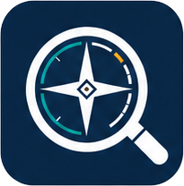

GalileoGalileo is a fast, local-first file manager for Windows 11.
No account. No cloud sync. Your library stays on your disk — with a tabbed explorer, a buttery photo viewer & image editor, an embedded media player (video + audio, Atmos), collage & slideshow, .zip browsing, an in-app phone/camera (MTP) browser, a self-contained Recycle Bin with secure delete, pinned network/WSL locations, an embedded terminal, a private Hidden album, and an encrypted vault.
The reasons Galileo started — real privacy, a great full-screen show, and a vault that actually encrypts.
Move a folder into an encrypted vault that's hidden from Windows — files become opaque AES-256-GCM blobs with random names, unlocked by a strong passphrase (Argon2id, with a live strength meter) or Windows Hello. Vaults stay out of the sidebar until one is unlocked; while unlocked, every Galileo feature works on them. They re-lock on idle, on exit, or on demand — and can optionally self-wipe after too many wrong passphrases. Send to Vault encrypts new files on the spot and wipes the originals, and optional Google Drive backup uploads only the encrypted, obfuscated files (the key never leaves your device).
One click (or H) drops a solid black curtain over the current photo — a glance over your shoulder reveals nothing. Or move photos to a persistent Hidden album, optionally gated behind Windows Hello. Originals are never modified; hidden state lives only in app data.
Launch from the toolbar or F5. Adjustable per-slide timing (2–30s), shuffle, loop, and transitions including Ken Burns pan & zoom. Auto-hiding controls, captions, and hidden photos are always skipped.
Built to replace Windows Explorer — without the clutter or the cloud — with a built-in media viewer, vault, and terminal along for the ride.
Win11-style folder tabs, each with its own back/forward history. Sidebar for Quick access & drives.
Filter the current folder by name, or flip on recursive search to sweep every subfolder.
Sort/group by name, date, type, or size — or click a Details column header. Grouped sections get collapsible headers. Each folder remembers its own sort & grouping.
Move-aware paste, plus drag files between folders (Shift to move) or out to any app.
A clean, Apple-style floating card shows the file, a slim bar, and time remaining — with pause, resume & cancel for any transfer. Same-drive moves stay instant.
On a name clash, choose Replace, Keep both, or Skip (apply to all) — with both files' size & date and a SHA-256 check that flags identical contents. Folders merge.
Fit-to-window, cursor-anchored wheel zoom, drag-pan, rotate with auto-refit, and a metadata panel.
Crop, rotate, flip, straighten, color adjustments, one-tap filters, and markup (ink/text/shapes) with a live Win2D preview. Saves a copy — originals stay untouched.
Bundled-FFmpeg editor: trim & multi-segment cut, crop, rotate, resize, denoise/sharpen/stabilize, speed, and export to MP4/MKV/GIF (GPU encoders auto-detected). Non-destructive.
Embedded playback for video (MP4/MOV/MKV/WEBM…) and audio (MP3/WAV/FLAC/M4A/OGG…) with album art, mute/repeat, and full 5.1/7.1/Atmos multichannel output.
Browse .zip files in place like folders, open files inside, and Extract Here / Extract All.
Galileo's own recycle bin — delete to restore later, then empty with an overwrite wipe (Zero, Random, DoD, or Gutmann 35-pass) so files can't be recovered.
Dock a real cmd / PowerShell / WSL terminal (ConPTY + xterm.js) right beside the explorer, in the current folder.
Auto-arranged Justified, Grid, or Hero layouts that fill the screen. Shuffle, resize, export to PNG.
System, Light, Dark, Terminal (green), and Gray — applied live, no restart.
Mount or remove a drive and it appears (or disappears) automatically. This PC groups Drives then Folders, each drive showing a capacity bar with “X free of Y”.
Galileo draws its own flat folder/drive/file icons (Win2D) — with themed Pictures, Music & Videos folders so media stands out from ordinary folders.
Alt+click, middle-click, or right-click → Open in new window to view an image in its own Galileo window — even with “reuse one window” on.
Make a folder appear empty in-app — reversible and disk-safe — optionally behind Windows Hello.
Browse MTP phones/cameras in-app with thumbnails, view photos/videos, and copy files both ways — plus rename/delete/new-folder on the device.
Pin local folders, network shares (\\server\share), or WSL paths to the sidebar for one-click access.
Downloaded or new files appear in their correct sorted spot automatically — no refresh, and your scroll & selection are kept.
Press Space for an instant Quick-Look preview of images, video, text/code, or any file — arrow through the folder, Enter to open.
Rename a multi-selection to name, name-1, name-2… keeping each extension — collision-safe.
Right-click an image to set it as desktop background, lock screen, or a folder's thumbnail; copy, print, or open with.
Drag the sidebar divider to rebalance nav vs. files; the width is remembered across sessions.
Registers as a Windows file handler so you can set Galileo as your default image viewer.
GPU-composited viewer, virtualized thumbnails, and throttled decoding for smooth fast-scrolling.
| ← / → | Previous / next image |
| Mouse wheel | Zoom toward the cursor |
| + / − / 0 | Zoom in / out / fit |
| R | Rotate 90° (auto-fit) |
| H | Black out / reveal (eye toggle) |
| Shift+S | Screenshot to Pictures\Galileo — just the photo/video when viewing |
| Space · ←/→ · Ctrl+C | Video: play/pause · step a frame · copy the current frame |
| F / F11 | Full screen |
| F5 | Refresh (explorer) · slideshow (viewer) |
| Space | Peek (Quick Look) the selected file · slideshow play/pause |
| Enter / F2 | Open / rename selected item (explorer) |
| Ctrl+C/X/V | Copy / cut / paste · Ctrl+A select all |
| Backspace | Back |
| Del / Shift+Del | Move to Recycle Bin / secure-erase (overwrite) |
| Esc | Exit slideshow / full screen / back |
Local-first by design: no telemetry, no account, no network calls. Hidden & favorite state and all settings live in a single JSON file under %LocalAppData%. Original files are never modified.
Galileo is an unpackaged, self-contained WinUI 3 desktop app. Clone, build, run.
Windows 11 and the .NET 8 SDK (winget install Microsoft.DotNet.SDK.8).
Compile the WinUI 3 project — produces Galileo.exe.
Launch it, or set it as your default image viewer via the included scripts.
# clone, then from the repo root: dotnet build src/Galileo.App dotnet run --project src/Galileo.App # optional: install + register as the default photo app (per-user, no admin) ./tools/install.ps1